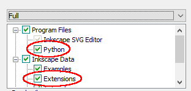

TexText for Inkscape 1.0 on Windows¶
Preparation¶
Make sure that Inkscape version 1.0 or later is installed on your system and you checked the
Pythonoption inProgram Filesas well as theExtensionsoptions inInkscape Dataduring the installation of Inkscape (by default this is the case).Make sure that an operational LaTeX distribution is installed on your system. You can verify this by invoking at least one of
pdflatex --version,xelatex --version, andlualatex --versionin a command or power shell window.Warning
Make sure that automatic package installation is either set to
Never install missing packages on-the-flyor set toAlways install missing packages on-the-fly. You can configure this feature during installation of MiKTeX or later in the MiKTeX console.Optional: If you whish to have syntax highlighting and some other nice features enabled in the TexText for Inkscape 1.0-Gui install GtkSourceView. For that purpose download the GtkSourceView package that matches your Inkscape installation type
and run the corresponding installer. It will add a small amount of files into your Inkscape 1.0 installation. You need administrator privileges for this step. If you do not trust the installer you will find zip packages on the GtkSourceView for Inkscape project site for manual installation.
Important
Compared to previous versions TexText for Inkscape 1.0 does not need any conversion utilities like ghostscript, pstoedit or pdfsvg. Furthermore, the required Python bindungs for the GTK3-GUI are already included in the windows version of Inkscape 1.0.
Download and install TexText for Inkscape 1.0¶
You have two options: A setup script or a GUI based installer.
Setup script (recommended)¶
Download the most recent package from GitHub release page (direct links: .zip)
Extract the package and change into the created directory.
Double click on the file
setup_win.bat. The script will check if all requirements described above are met. If so, it will install the extension files into the user’s Inkscape configuration directory (usually this is%USERPROFILE%\AppData\Roaming\Inkscape).
Note
If you would like to skip the requirement checks during installation call the script from the command line as follows:
setup_win.bat --skip-requirements-check
Installer¶
If you have trouble with the setup script you can use a GUI based installer:
Download the most recent installer from GitHub release page (direct links: .exe)
Use the installer and follow the instructions. It will copy the required files into the user’s Inkscape configuration directory (usually this is
%USERPROFILE%\AppData\Roaming\Inkscape).
Note
The installer does not perform any requirement checks. This means that the extension might fail to run if you did not install the programs mentioned above correctly.
You are done. Now you can consult the usage instructions. In case of problems consult Troubleshooting.